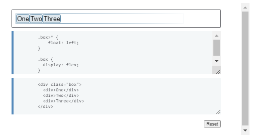
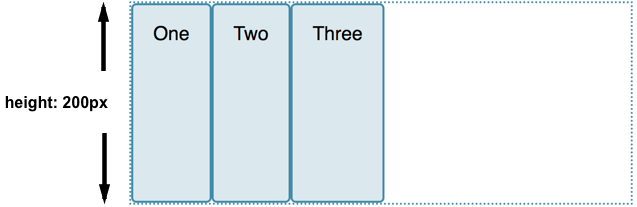
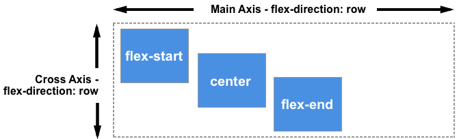
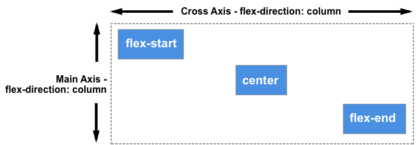

A continuación se mostraran los elementos
más populares dentro del lenguaje de estilo CSS
especificamente la versión CSS3.
Ejemplos:
The flex container
An area of a document laid out using flexbox is called a flex
container. To create a flex container, we set the value of the
area's container's display property to flex or inline-flex. As soon
as we do this the direct children of that container become flex
items. As with all properties in CSS, some initial values are
defined, so when creating a flex container all of the contained flex
items will behave in the following way.
-
Items display in a row (the flex-direction property's default is
row).
- The items start from the start edge of the main axis.
-
The items do not stretch on the main dimension, but can shrink.
- The items will stretch to fill the size of the cross axis.
- The flex-basis property is set to auto.
- The flex-wrap property is set to nowrap.
The result of this is that your items will all line up in a row,
using the size of the content as their size in the main axis. If
there are more items than can fit in the container, they will not
wrap but will instead overflow. If some items are taller than
others, all items will stretch along the cross axis to fill its full
size.
You can see in the live example below how this looks. Try editing
the items or adding additional items in order to test the initial
behavior of flexbox.
Changing flex-direction
Adding the flex-direction property to the flex container allows us
to change the direction in which our flex items display. Setting
flex-direction: row-reverse will keep the items displaying along the
row, however the start and end lines are switched.
If we change flex-direction to column the main axis switches and our
items now display in a column. Set column-reverse and the start and
end lines are again switched.
The live example below has flex-direction set to row-reverse. Try
the other values — row, column and column-reverse — to see what
happens to the content.
Multi-line flex containers with flex-wrap
While flexbox is a one dimensional model, it is possible to cause
our flex items to wrap onto multiple lines. In doing so, you should
consider each line as a new flex container. Any space distribution
will happen across that line, without reference to the lines on
either side.
To cause wrapping behavior add the property flex-wrap with a value
of wrap. Now, should your items be too large to all display in one
line, they will wrap onto another line. The live sample below
contains items that have been given a width, the total width of the
items being too wide for the flex container. As flex-wrap is set to
wrap, the items wrap. Set it to nowrap, which is also the initial
value, and they will instead shrink to fit the container because
they are using initial flexbox values that allows items to shrink.
Using nowrap would cause an overflow if the items were not able to
shrink, or could not shrink small enough to fit.

Find out more about wrapping flex items in the guide Mastering
Wrapping of Flex Items.
The flex-flow shorthand
You can combine the two properties flex-direction and flex-wrap into
the flex-flow shorthand. The first value specified is flex-direction
and the second value is flex-wrap.
In the live example below try changing the first value to one of the
allowable values for flex-direction - row, row-reverse, column or
column-reverse, and also change the second to wrap and nowrap.

Properties applied to flex items
To have more control over flex items we can target them directly. We
do this by way of three properties:
- flex-grow
- flex-shrink
- flex-basis
We will take a brief look at these properties in this overview, and
you can gain a fuller understanding in the guide Controlling Ratios
of Flex Items on the Main Axis.
Before we can make sense of these properties we need to consider the
concept of available space. What we are doing when we change the
value of these flex properties is to change the way that available
space is distributed amongst our items. This concept of available
space is also important when we come to look at aligning items.
If we have three 100 pixel-wide items in a container which is 500
pixels wide, then the space we need to lay out our items is 300
pixels. This leaves 200 pixels of available space. If we don't
change the initial values then flexbox will put that space after the
last item.

If we instead would like the items to grow and fill the space, then
we need to have a method of distributing the leftover space between
the items. This is what the flex properties that we apply to the
items themselves, will do.
The flex-basis property
The flex-basis is what defines the size of that item in terms of the
space it leaves as available space. The initial value of this
property is auto — in this case the browser looks to see if the
items have a size. In the example above, all of the items have a
width of 100 pixels and so this is used as the flex-basis.
If the items don't have a size then the content's size is used as
the flex-basis. This is why when we just declare display: flex on
the parent to create flex items, the items all move into a row and
take only as much space as they need to display their contents.
The flex-grow property
With the flex-grow property set to a positive integer, flex items
can grow along the main axis from their flex-basis. This will cause
the item to stretch and take up any available space on that axis, or
a proportion of the available space if other items are allowed to
grow too.
If we gave all of our items in the example above a flex-grow value
of 1 then the available space in the flex container would be equally
shared between our items and they would stretch to fill the
container on the main axis.
The flex-grow property can be used to distribute space in
proportion. If we give our first item a flex-grow value of 2, and
the other items a value of 1 each, 2 parts of the available space
will be given to the first item (100px out of 200px in the case of
the example above), 1 part each the other two (50px each out of the
200px total).
The flex-shrink property
Where the flex-grow property deals with adding space in the main
axis, the flex-shrink property controls how it is taken away. If we
do not have enough space in the container to lay out our items, and
flex-shrink is set to a positive integer, then the item can become
smaller than the flex-basis. As with flex-grow, different values can
be assigned in order to cause one item to shrink faster than others
— an item with a higher value set for flex-shrink will shrink faster
than its siblings that have lower values.
The minimum size of the item will be taken into account while
working out the actual amount of shrinkage that will happen, which
means that flex-shrink has the potential to appear less consistent
than flex-grow in behavior. We'll therefore take a more detailed
look at how this algorithm works in the article Controlling Ratios
of items along the main axis.
You will very rarely see the flex-grow, flex-shrink, and flex-basis
properties used individually; instead they are combined into the
flex shorthand. The flex shorthand allows you to set the three
values in this order — flex-grow, flex-shrink, flex-basis.
The live example below allows you to test out the different values
of the flex shorthand; remember that the first value is flex-grow.
Giving this a positive value means the item can grow. The second is
flex-shrink — with a positive value the items can shrink, but only
if their total values overflow the main axis. The final value is
flex-basis; this is the value the items are using as their base
value to grow and shrink from.

There are also some predefined shorthand values which cover most of
the use cases. You will often see these used in tutorials, and in
many cases these are all you will need to use. The predefined values
are as follows:
- flex:inital
- flex:auto
- flex:none
- flex: positive nomber
Setting flex: initial resets the item to the initial values of
Flexbox. This is the same as flex: 0 1 auto. In this case the value
of flex-grow is 0, so items will not grow larger than their
flex-basis size. The value of flex-shrink is 1, so items can shrink
if they need to rather than overflowing. The value of flex-basis is
auto. Items will either use any size set on the item in the main
dimension, or they will get their size from the content size.
Using flex: auto is the same as using flex: 1 1 auto; everything is
as with flex:initial but in this case the items can grow and fill
the container as well as shrink if required.
Using flex: none will create fully inflexible flex items. It is as
if you wrote flex: 0 0 auto. The items cannot grow or shrink but
will be laid out using flexbox with a flex-basis of auto.
The shorthand you often see in tutorials is flex: 1 or flex: 2 and
so on. This is as if you used flex: 1 1 0 or flex: 2 1 0 and so on,
respectively. The items can grow and shrink from a flex-basis of 0.
Try these shorthand values in the live example below.
Alignment, justification and distribution of free space between
items
A key feature of flexbox is the ability to align and justify items
on the main- and cross-axes, and to distribute space between flex
items. Note that these properties are to be set on the flex
container, not on the items themselves.
align-items
The align-items property will align the items on the cross axis.
The initial value for this property is stretch and this is why flex
items stretch to the height of the flex container by default. This
might be dictated by the height of the tallest item in the
container, or by a size set on the flex container itself.
You could instead set align-items to flex-start in order to make the
items line up at the start of the flex container, flex-end to align
them to the end, or center to align them in the center. Try this in
the live example — I have given the flex container a height in order
that you can see how the items can be moved around inside the
container. See what happens if you set the value of align-items to:
- stretch
- flex-start
- flex-end
- center

justify-content
The justify-content property is used to align the items on the main
axis, the direction in which flex-direction has set the flow. The
initial value is flex-start which will line the items up at the
start edge of the container, but you could also set the value to
flex-end to line them up at the end, or center to line them up in
the center.
You can also use the value space-between to take all the spare space
after the items have been laid out, and share it out evenly between
the items so there will be an equal amount of space between each
item. To cause an equal amount of space on the right and left of
each item use the value space-around. With space-around, items have
a half-size space on either end. Or, to cause items to have equal
space around them use the value space-evenly. With space-evenly,
items have a full-size space on either end.
- flex-start
- flex-end
- center
- space-around
- space-between
- space-evenly

In the article Aligning Items in a Flex Container we will explore
these properties in more depth, in order to have a better
understanding of how they work. These simple examples however will
be useful in the majority of use cases.
Relationship of flexbox to other layout methods
In this article we will take a look at how Flexbox fits in with all
the other CSS modules. We'll find out which specifications you also
need to take notice of if you want to learn flexbox, and find out
why flexbox is different to some other modules.
The box alignment module
For many people the first reason they start to look at flexbox is
because of the ability to properly align flex items inside a flex
container. Flexbox provides access to properties that allow the
alignment of items on their cross axis and justification of items on
the main axis.
These properties started life in the flexbox specification, but are
now also part of the Box Alignment Specification. This specification
details how alignment works in all layout — not just flexbox. Box
alignment deals with alignment and justification, including creating
gaps or gutters between flex items.
The reason that the Box alignment properties remain detailed in the
flexbox specification as well as being in box alignment is to ensure
that completion of the flexbox spec is not held up by box alignment,
which has to detail these methods for all layout types. There is a
note in the flexbox spec stating that in the future, once it is
completed, the definitions in Box Alignment Level 3 will supersede
those of flexbox:
"Note: While the alignment properties are defined in CSS Box
Alignment [CSS-ALIGN-3], Flexible Box Layout reproduces the
definitions of the relevant ones here so as to not create a
normative dependency that may slow down advancement of the spec.
These properties apply only to flex layout until CSS Box Alignment
Level 3 is finished and defines their effect for other layout
modes. Additionally, any new values defined in the Box Alignment
module will apply to Flexible Box Layout; in other words, the Box
Alignment module, once completed, will supersede the definitions
here."
In a later article in this series — Aligning items in a flex
container — we will take a thorough look at how the Box Alignment
properties apply to flex items.
Writing modes
In the Basic concepts of flexbox article, I explained that flexbox
is writing mode aware. Writing modes are fully detailed in the CSS
Writing Modes specification, which details how CSS supports the
various different writing modes that exist internationally. We need
to be aware of how this will impact our flex layouts as writing mode
changes the direction that blocks are laid out in our document.
Understanding block and inline directions is key to new layout
methods.
It is worth noting that we might want to change the writing mode of
our document for reasons other than publishing content in a language
that uses a different writing mode. See this article for a full
description of writing modes and ways to use them, both for content
in other languages and for creative reasons.
the writing modes
The writing modes specification defines the following values of the
writing-mode property, which serve to change the direction that
blocks are laid out on the page, to match the direction that blocks
lay out when content is formatted in that particular writing mode.
You can change the live example below to these modes in order to see
what happens to the flex layout.
- horizontal-tb
- vertical-rl
- vertical-lr
- sideways-rl
- sideways-lr

Note that sideways-rl and sideways-lr have support only in Firefox
currently. There are also some known issues with regard to
writing-mode and flexbox. You can see more information on browser
support in the MDN documentation for writing-mode. However if you
are planning on using writing modes in your layout, carefully
testing the results is advisable — not least because it would be
easy to make things hard to read!
Note that you would not normally use CSS and the writing-mode
property to change an entire document to another writing mode. This
would be done via HTML, by adding a dir and lang attribute to the
html element to indicate the document language and default text
direction. This would mean that the document would display correctly
even if CSS did not load.
Flexbox and other layout methods
The flexbox specification contains a definition of what happens if
an item uses another layout method and then becomes a flex item. For
example, if an item is floated and then its parent becomes a flex
container. Or, how a flex container behaves as part of layout.
An element set to display: flex behaves in most ways like any other
block level container that establishes a containing block. Floats
will not intrude, and the containers' margins will not collapse.
With regard to flex items, if an item was floated or cleared and
then becomes a flex item due to the parent having display: flex
applied, the floating and clearing will no longer happen, and the
item will not be taken out of normal flow in the way that floats
are. If you have used the vertical-align property, as used with
inline-block or table layout for alignment, this will no longer
affect the item and you can use the alignment properties of flexbox
instead.
In this next live example the child elements have been floated, and
then their container has had display: flex added. If you remove
display: flex, you should see that the .box element collapses as we
have no clearing applied. This demonstrates that the float is
happening. Re-apply display: flex and the collapsing does not
happen. This is because the items no longer have a float applied, as
they have been transformed into flex items.

Flexbox and Grid Layout
CSS Grid Layout and Flexbox generally act in the same way with
regards to overwriting other methods. You might however want to use
flexbox as a fallback for grid layout, as there is better support
for flexbox in older browsers. This approach works very well. If a
flex item becomes a grid item, then the flex properties that may
have been assigned to the child elements will be ignored.
You can use the Box Alignment properties across both layout methods,
so using flexbox as a fallback for grid layout can work very well.
Flex and grid — what's the difference?
A common question is to ask what the difference is between Flexbox
and CSS Grid Layout — why do we have two specifications that
sometimes appear to be doing the same thing?
The most straightforward answer to this question is defined in the
specifications themselves. Flexbox is a one-dimensional layout
method whereas Grid Layout is a two-dimensional layout method. The
example below has a flex layout. As already described in the Basic
concepts article, flex items can be allowed to wrap but, once they
do so, each line becomes a flex container of its own. When space is
distributed flexbox does not look at the placement of items in other
rows and tries to line things up with each other.
If we create a very similar layout using Grid, we can control the
layout in both rows and columns.

These examples point to another key difference between these layout
methods. In Grid Layout you do the majority of sizing specification
on the container, setting up tracks and then placing items into
them. In flexbox, while you create a flex container and set the
direction at that level, any control over item sizing needs to
happen on the items themselves.
In some cases you could happily use either layout method, but as you
become confident with both you will find each one suiting different
layout needs, and you will end up with both methods in your CSS.
There is rarely a right or wrong answer.
As a rule of thumb, if you are adding widths to flex items in order
to make items in one row of a wrapped flex container line up with
the items above them you really want two-dimensional layout. In this
case it is likely that the component would be better laid out using
CSS Grid Layout. It isn't the case that you should use flexbox for
small components and grid layout for larger ones; a tiny component
can be two dimensional, and a large layout can be represented better
with layout in one dimension. Try things out — we have a choice in
layout method for the first time, so take advantage of it.
For more comparisons of grid and flexbox see the article
Relationship of Grid Layout to other layout methods. This article
details many of the ways that Grid Layout differs from flex layout,
and demonstrates some of the extra functionality you get when using
Grid Layout such as layering of items on the grid. This may also
help in your decision as to which layout method to use.
Flexbox and display: contents
The contents value of the display property is a new value that is
described in the spec as follows:
"The element itself does not generate any boxes, but its children
and pseudo-elements still generate boxes as normal. For the
purposes of box generation and layout, the element must be treated
as if it had been replaced with its children and pseudo-elements
in the document tree."
This value of display controls box generation, and whether the
element should generate a box that we can style and see on the page,
or whether instead the box it would normally create should be
removed and the child elements essentially moved up to participate
in whatever layout method the parent would have been part of. This
is much easier to see with an example.
In the following live example I have a flex container with three
child elements. One of these flex items has two elements nested
inside it, which would not ordinarily participate in flex layout.
Flex layout only applies to the direct children of a flex container.
By adding display: contents to the wrapper around the nested
elements, you can see that the item has disappeared from the layout,
allowing the two sub-children to be laid out as if they were direct
children of the flex container. You can try removing the display:
contents line to see it return.
Note that this only removes the box from the layout; the
sub-children don't become direct children in any other way. You can
see that as I have used a direct child selector to add the
background and borders to the flex items, this has not been applied
to our nested children. They have been laid out as flex items, but
as they are not direct children they do not get the other styling.
Warning: Current implementations in most browsers will remove any
element with display: contents from the accessibility tree (but
descendants will remain). This will cause the element itself to no
longer be announced by screen reading technology. This is incorrect
behavior according to the specification, see display: contents.
Also, having removed the box you cannot then use it to — for example
— add a background color behind the nested sub children. If you
remove display: contents in this live example you will see that the
direct child we are removing has an orange background color. This
also disappears when the box disappears.
Browser support for display:contents is limited and required for
this demo to work. Firefox supports display: contents already, and
the value is being implemented in Chrome. Once there is better
browser support this feature will be very useful in circumstances
where you need the markup for semantic reasons but do not want to
display the box that it would generate by default.
Aligning Items in a Flex Container
One of the reasons that flexbox quickly caught the interest of web
developers is that it brought proper alignment capabilities to the
web for the first time. It enabled proper vertical alignment, so we
can at last easily center a box. In this guide, we will take a
thorough look at how the alignment and justification properties work
in Flexbox.
To center our box we use the align-items property to align our item
on the cross axis, which in this case is the block axis running
vertically. We use justify-content to align the item on the main
axis, which in this case is the inline axis running horizontally.

You can take a look at the code of this example below. Change the
size of the container or nested element and the nested element
always remains centered.
Properties that control alignment
The properties we will look at in this guide are as follows.
-
justify-content — controls alignment of all items on the main
axis.
-
align-items — controls alignment of all items on the cross axis.
-
align-self — controls alignment of an individual flex item on the
cross axis.
-
align-content — described in the spec as for "packing flex lines";
controls space between flex lines on the cross axis.
-
gap, column-gap, and row-gap — used to create gaps or gutters
between flex items.
We will also discover how auto margins can be used for alignment in
flexbox.
The Cross Axis
The align-items and align-self properties control alignment of our
flex items on the cross axis, down the columns if flex-direction is
row and along the row if flex-direction is column.
We are making use of cross-axis alignment in the most simple flex
example. If we add display: flex to a container, the child items all
become flex items arranged in a row. They will all stretch to be as
tall as the tallest item, as that item is defining the height of the
items on the cross axis. If your flex container has a height set,
then the items will stretch to that height, regardless of how much
content is in the item.


The reason the items become the same height is that the initial
value of align-items, the property that controls alignment on the
cross axis, is set to stretch.
We can use other values to control how the items align:
- align-items: flex-start
- align-items: flex-end
- align-items: center
- align-items: stretch
- align-items: baseline
In the live example below, the value of align-items is stretch. Try
the other values and see how all of the items align against each
other in the flex container.

Aligning one item with align-self
The align-items property sets the align-self property on all of the
flex items as a group. This means you can explicitly declare the
align-self property to target a single item. The align-self property
accepts all of the same values as align-items plus a value of auto,
which will reset the value to that which is defined on the flex
container.
In this next live example, the flex container has align-items:
flex-start, which means the items are all aligned to the start of
the cross axis. I have targeted the first item using a first-child
selector and set that item to align-self: stretch; another item has
been selected using its class of selected and given align-self:
center. You can change the value of align-items or change the values
of align-self on the individual items to see how this works.
Changing the main axis
So far we have looked at the behavior when our flex-direction is
row, and while working in a language written top to bottom. This
means that the main axis runs along the row horizontally, and our
cross axis alignment moves the items up and down.

If we change our flex-direction to column, align-items and
align-self will align the items to the left and right.

You can try this out in the example below, which has a flex
container with flex-direction: column yet otherwise is exactly the
same as the previous example.

Aligning content on the cross axis — the align-content property
So far we have been aligning the items, or an individual item inside
the area defined by the flex-container. If you have a wrapped
multiple-line flex container then you might also want to use the
align-content property to control the distribution of space between
the rows. In the specification this is described as packing flex
lines.
For align-content to work you need more height in your flex
container than is required to display the items. It then works on
all the items as a set, and dictates what happens with that free
space, and the alignment of the entire set of items within it.
The align-content property takes the following values:
- align-content: flex-start
- align-content: flex-end
- align-content: center
- align-content: space-between
- align-content: space-around
- align-content: stretch
-
align-content: space-evenly (not defined in the Flexbox
specification)
In the live example below, the flex container has a height of 400
pixels, which is more than needed to display our items. The value of
align-content is space-between, which means that the available space
is shared out between the flex lines, which are placed flush with
the start and end of the container on the cross axis.
Try out the other values to see how the align-content property
works.
Once again we can switch our flex-direction to column in order to
see how this property behaves when we are working by column. As
before, we need enough space in the cross axis to have some free
space after displaying all of the items.
Note: The value space-evenly is not defined in the flexbox
specification and is a later addition to the Box Alignment
specification. Browser support for this value is not as good as that
of the values defined in the flexbox spec.
Aligning content on the main axis
Now that we have seen how alignment works on the cross axis, we can
take a look at the main axis. Here we only have one property
available to us — justify-content. This is because we are only
dealing with items as a group on the main axis. With justify-content
we control what happens with available space, should there be more
space than is needed to display the items.
In our initial example with display: flex on the container, the
items display as a row and all line up at the start of the
container. This is due to the initial value of justify-content being
flex-start. Any available space is placed at the end of the items.
The justify-content property accepts the same values as
align-content.
- justify-content: flex-start
- justify-content: flex-end
- justify-content: center
- justify-content: space-between
- justify-content: space-around
-
justify-content: space-evenly (not defined in the Flexbox
specification)
In the example below, the value of justify-content is space-between.
The available space after displaying the items is distributed
between the items. The left and right item line up flush with the
start and end.

If the main axis is in the block direction because flex-direction is
set to column, then justify-content will distribute space between
items in that dimension as long as there is space in the flex
container to distribute.
Alignment and Writing Modes
Remember that with all of these alignment methods, the values of
flex-start and flex-end are writing mode-aware. If the value of
justify-content is flex-start and the writing mode is left-to-right
as in English, the items will line up starting at the left side of
the container.

However if the writing mode is right-to-left as in Arabic, the items
will line up starting at the right side of the container.

The live example below has the direction property set to rtl to
force a right-to-left flow for our items. You can remove this, or
change the values of justify-content to see how flexbox behaves when
the start of the inline direction is on the right.

Alignment and flex-direction
The start line will also change if you change the flex-direction
property — for example using row-reverse instead of row.
In this next example I have items laid out with flex-direction:
row-reverse and justify-content: flex-end. In a left to right
language the items all line up on the left. Try changing
flex-direction: row-reverse to flex-direction: row. You will see
that the items now move to the right-hand side.
While this may all seem a little confusing, the rule to remember is
that unless you do something to change it, flex items lay themselves
out in the direction that words are laid out in the language of your
document along the inline, row axis. flex-start will be where the
start of a sentence of text would begin.

You can switch them to display in the block direction for the
language of your document by selecting flex-direction: column. Then
flex-start will then be where the top of your first paragraph of
text would start.

If you change flex-direction to one of the reverse values, then they
will lay themselves out from the end axis and in the reverse order
to the way words are written in the language of your document.
flex-start will then change to the end of that axis — so to the
location where your lines would wrap if working in rows, or at the
end of your last paragraph of text in the block direction.


Using auto margins for main axis alignment
We don't have a justify-items or justify-self property available to
us on the main axis as our items are treated as a group on that
axis. However it is possible to do some individual alignment in
order to separate an item or a group of items from others by using
auto margins along with flexbox.
A common pattern is a navigation bar where some key items are
aligned to the right, with the main group on the left. You might
think that this should be a use case for a justify-self property,
however consider the image below. I have three items on one side and
two on the other. If I were able to use justify-self on item d, it
would also change the alignment of item e that follows, which may or
may not be my intention.

Instead we can target item 4 and separate it from the first three
items by giving it a margin-left value of auto. Auto margins will
take up all of the space that they can in their axis — it is how
centering a block with margin auto left and right works. Each side
tries to take as much space as it can, and so the block is pushed
into the middle.
In this live example, I have flex items arranged into a row with the
basic flex values, and the class push has margin-left: auto. You can
try removing this, or adding the class to another item to see how it
works.

Creating gaps between items
To create a gap between flex items, use the gap, column-gap, and
row-gap properties. The column-gap property creates gaps between
items on the main axis. The row-gap property creates gaps between
flex lines, when you have flex-wrap set to wrap. The gap property is
a shorthand that sets both together.